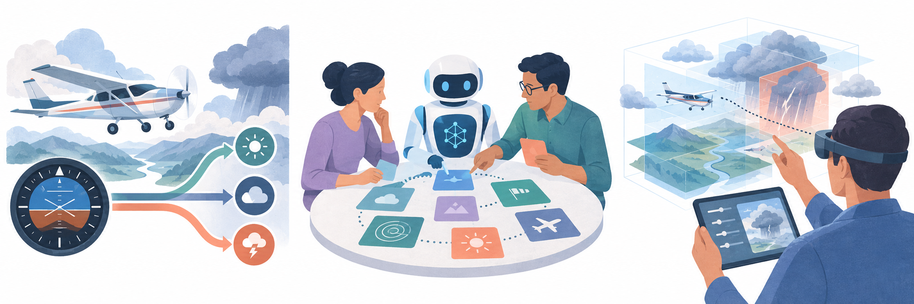

01 / Cognition under pressure
Adaptive Decision Making
I study how people regulate their decision strategies as cognitive resources and situational demands change, and how training can strengthen that adaptation.
- Cognitive task analysis
- Simulation experiments
- Metacognitive training
Matching strategies to cognitive resources
Using the Contextual Control Model in an air traffic control simulation, I examined how available cognitive resources and experience shape strategy selection.
Finding
Performance was highest when decision strategies aligned with available cognitive resources. Experience strengthened participants' ability to select strategies suited to those resources.
Training pilots for deteriorating weather
Interviews and cognitive task analysis with pilots identified the cues and conditions that trigger strategy changes. I used these insights to develop training that helps pilots monitor their cognitive resources and adapt their decisions.
Study
In an experiment with 40 licensed pilots, trained participants made more protective decisions as weather deteriorated and showed better strategy-resource alignment. The evaluation manuscript is under review.